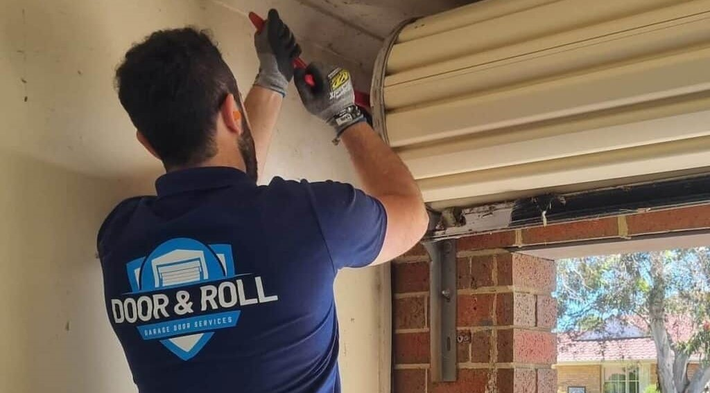

When it comes to your home, the garage door is more than just a functional element—it’s a statement of style, security, and convenience. Whether you’re looking to install a brand-new garage door with our expert Garage Door Installation services or need repairs for your existing one, you want a service that’s reliable, affordable, and fast. That’s where Door & Roll comes in! Serving Melbourne, Brisbane, and the Gold Coast, we’re your go-to experts for all things garage doors. With a promise of expert help at the best prices and a 30-minute response time, we’re here to make your life easier.
Let’s face it—garage doors can be tricky. From installation to repairs, there’s a lot that goes into ensuring they work smoothly and last for years. But don’t worry, we’ve got you covered! Here’s why Door & Roll stands out as the best choice for garage door services in Melbourne, Brisbane, and the Gold Coast:
Our team of technicians isn’t just skilled—they’re garage door superheroes! With years of experience under their belts, they know everything there is to know about garage doors. Whether it’s installing a sleek new door or fixing a stubborn one that won’t budge, our experts handle it all with precision and care.
We believe that top-notch garage door services shouldn’t cost an arm and a leg. At Door & Roll, we offer competitive pricing that fits your budget. Plus, we use only the highest-quality materials, so you get the best value for your money.
Got a garage door emergency? No problem! We understand that time is of the essence, which is why we promise a 30-minute response time across Melbourne, Brisbane, and the Gold Coast. Whether it’s a broken spring, a misaligned track, or a door that’s stuck halfway, we’ll be there in a flash to save the day.
From installation to repairs and maintenance, we offer a comprehensive range of garage door services. Whether you’re looking for a modern automatic door or need to fix a noisy roller door, we’ve got the expertise to handle it all.
At Door & Roll, your satisfaction is our top priority. We go above and beyond to ensure that every customer is happy with our service. From the moment you call us to the completion of the job, we’re committed to delivering a seamless and stress-free experience.
Installing a new garage door is a big decision, and we’re here to make it as easy as possible. Here’s how our installation process works:
We start by understanding your needs and preferences. Whether you’re looking for a traditional, contemporary, or custom-designed garage door, we’ll help you choose the perfect style and material to match your home’s aesthetic.
Once you’ve made your selection, our expert technicians will handle the installation from start to finish. We ensure that every component is installed correctly, so your new garage door operates smoothly and safely.
After installation, we thoroughly test the door to ensure it’s working perfectly. We’ll also walk you through how to use and maintain your new garage door, so you can enjoy it for years to come.
Even the best garage doors can run into issues from time to time. Here are some common problems we can fix in no time:
Garage door springs are under a lot of tension, and they can wear out or break over time. This can make it difficult or even dangerous to open or close your door. Our technicians are trained to safely replace broken springs, so your door is back in action quickly.
If your garage door isn’t opening or closing smoothly, the tracks might be misaligned. We’ll realign the tracks and ensure everything is running smoothly.
A noisy garage door can be annoying and disruptive. Whether it’s squeaking, grinding, or rattling, we’ll identify the cause of the noise and fix it so your door operates quietly and efficiently.
Dented or damaged panels not only affect the appearance of your garage door but can also compromise its functionality. We can replace or repair damaged panels to restore your door’s look and performance.
If your automatic garage door opener isn’t working properly, it can be a major inconvenience. We’ll diagnose the issue and repair or replace the opener to get your door back on track.
Just like any other part of your home, your garage door needs regular maintenance to stay in top shape. Here’s why you should schedule routine maintenance with Door & Roll:
No matter where you are in Melbourne, Brisbane, or the Gold Coast, Door & Roll is just a phone call away. Our fast and reliable service ensures that you get the help you need, when you need it. Whether it’s a new installation, a repair, or routine maintenance, we’re here to make your garage door experience hassle-free.
Scheduling a service with Door & Roll is quick and easy. Here’s how you can get started:
“Door & Roll installed a new garage door for us, and we couldn’t be happier! The team was professional, efficient, and the door looks fantastic.” – Sarah, Melbourne
“Our garage door broke down unexpectedly, and Door & Roll came to the rescue within 30 minutes. They fixed the issue quickly and at a great price. Highly recommend!” – James, Brisbane
“The technicians were friendly and knowledgeable. They explained everything clearly and left our garage door working like new. Great service!” – Emily, Gold Coast
Your garage door is an essential part of your home, and it deserves the best care possible. With Door & Roll, you get expert help at the best prices, fast service, and a commitment to customer satisfaction. Whether you’re in Melbourne, Brisbane, or the Gold Coast, we’re here to make your garage door experience seamless and stress-free.